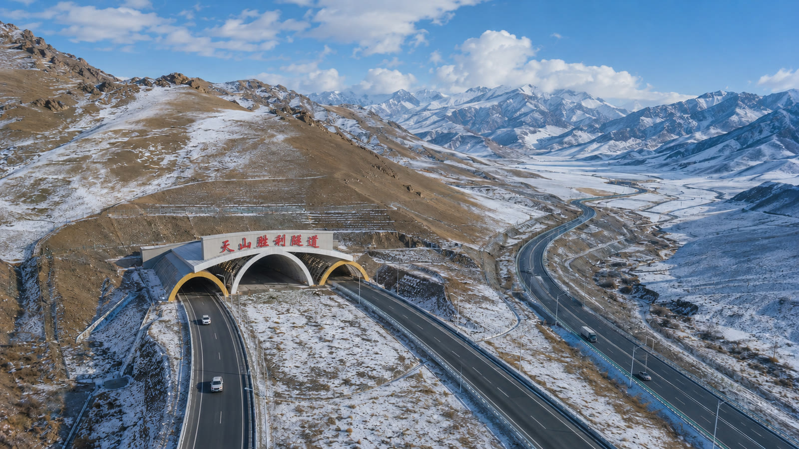
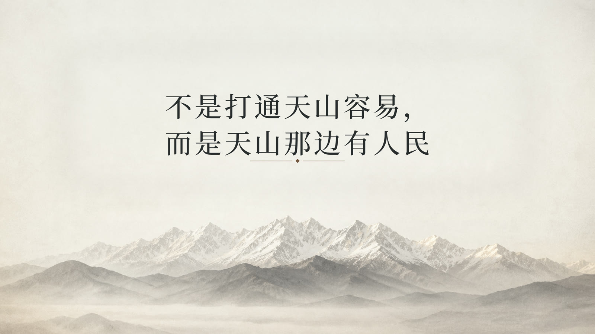
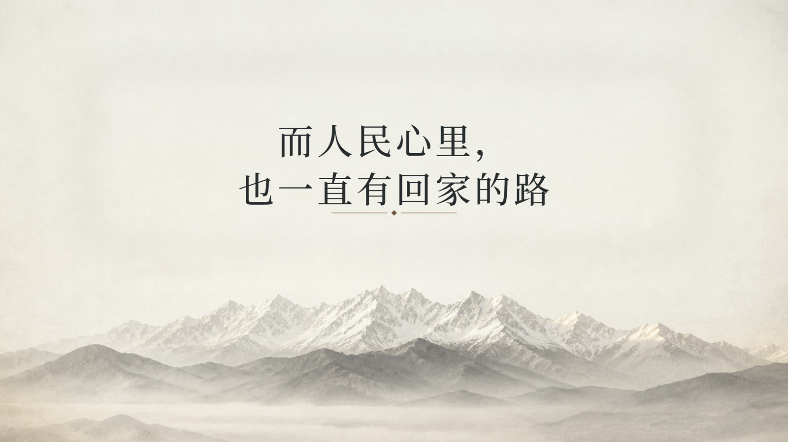
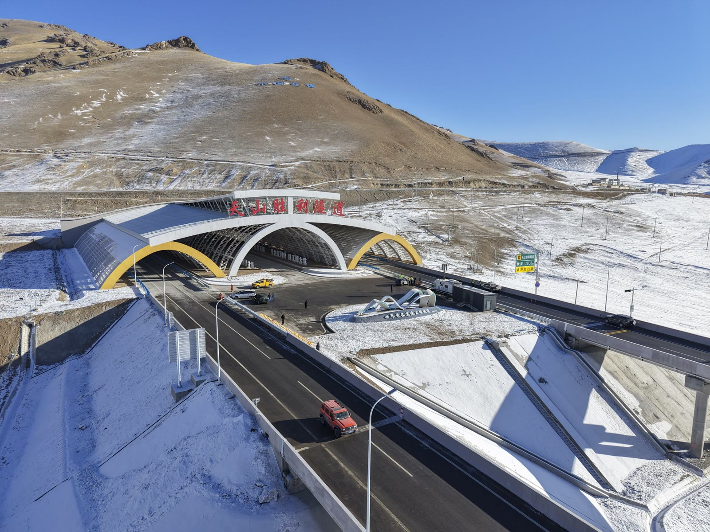
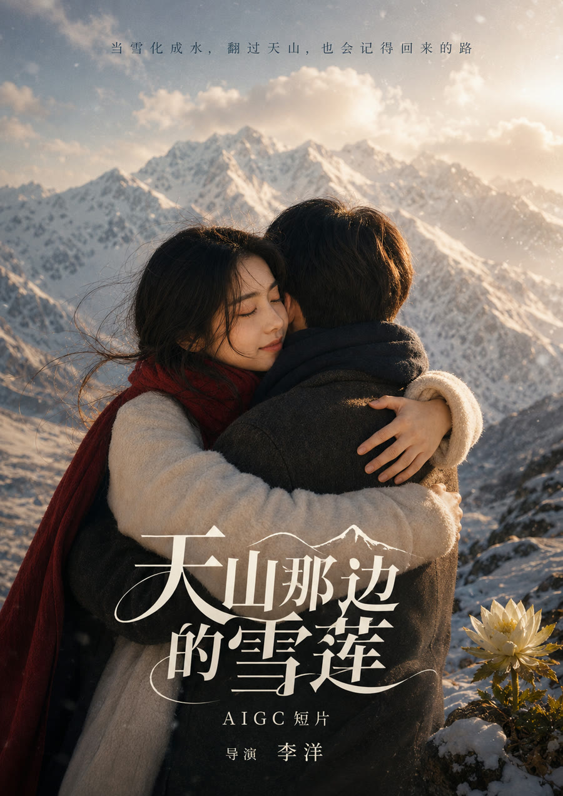

反转一
雪人不只来自一个女孩
摄影师以为雪人花园只是漫长等待，后来才知道，村民、司机、牧民、工人和游客都把牵挂留在这里。
文旅与非遗 AIGC 影像生产样板
一个创作者调度233个AI岗位智能体，把创意、分镜、生成、质检、剪辑和宣发交付组织成可复制的专业影像生产流程。
首个展示样片
以新疆天山为背景，从童年雪人约定出发，把个人等待、交通建设与民族地区新貌收束为一句话：路通之后，人心相连。
女孩留在北疆伊犁，男孩走向南疆喀什，一座山把两个人分开，也把无数普通人的牵挂留在路上。多年后，雪莲盛开的山谷里出现“雪人花园”。
天山胜利隧道、昭温公路等交通建设成为故事的现实底色；雪莲象征高寒中的坚韧与纯净，雪人承载普通人的等待与愿望。
故事结构
摄影师以为雪人花园只是漫长等待，后来才知道，村民、司机、牧民、工人和游客都把牵挂留在这里。

他不是被动等待路通的人，而是参与新路建设与试运行保障的人，把想念变成行动。
片尾父女并非普通旁观者。那位父亲就是当年的男孩，戴着石榴花发卡走来的女主，是孩子的妈妈。
镜头资产墙
精选8个生成镜头做成轻量循环片段，用于展示画面质感、场景控制和叙事连续性。
生产方法
从客户需求、主题方向、人物关系和叙事结构开始，先确定“为什么拍”和“拍给谁看”。
建立人物定妆图、场景参考图、关键道具图和视觉基调，降低生成过程中的漂移。
按分镜拆解提示词，围绕连续性、动作、构图、真实感和情绪稳定性进行多轮筛选。
统一完成剪辑、声音、字幕、海报、路演材料和客户版本，让作品能被展示、复用和报价。

AI岗位智能体矩阵
项目把传统影视团队中的创意策划、脚本、分镜、提示词、镜头生成、质量检查、剪辑建议、宣发文案与客户交付流程拆解为可复用的AI协作岗位。
产品与服务
先以定制服务验证市场，再沉淀提示词库、镜头质检规则、行业模板库和视觉资产库。

30秒预热视频、90秒主题短片、3分钟故事片、活动开场片。
把技艺、人物、地域和精神内核转化为可传播的视觉叙事。

服务城市宣传、产业园区、展会活动和中小企业品牌内容更新。

帮助客户搭建从创意、生成、质检到宣发交付的标准化流程。
项目发起人
具备新闻媒体、纪实摄影、非遗影像与AIGC影像创作经验，参与过国家艺术基金“智媒时代下的纪实摄影”相关培训，正在把个人影像创作经验升级为可展示、可合作、可孵化的AI创业项目。
入驻诉求聚焦算力与模型资源、DemoDay路演、生态展示、企业服务订单对接、财法税与知识产权辅导。
推进计划
BP、样片链接、AI岗位矩阵、报价包和项目主页成型。
2个文旅/非遗样片，加1个企业品牌样片。
客户线索清单、SOP、合同模板、路演Demo和试点订单推进。